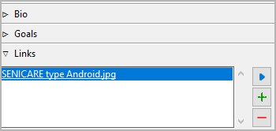

Title and description are displayed in an editable “index card”.
The editing of the title can be completed by pressing the Enter key.
Changes to the description are applied when the mouse is clicked
anywhere outside the text input field.
Tags are a very freely usable tool for labeling locations and items
in the tree view. Tags do not have to be defined elsewhere, but
simply entered in the input field separated by semicolons.
Editing can be completed by pressing the Enter key.
Caution
If you want to use a tag more than once, make sure you use
the same spelling in the different places.
Expand or collapse this frame by clicking on the label.

This is a list for image and research data links.
Although noveltree holds some character/location/item data, it is
not the right application for extensive world building. For this,
you may want to use more powerful software, like Zim Desktop Wiki. In this case, noveltree allows you to
create links to the text files that will take you quickly to the right
places in the wiki.
Or you have collected some images that could inspire you when writing.
Then simply create links to these images to open them with your
system’s standard image viewer.
Tip
If you have collected several images for a character in a folder
that your standard image viewer can browse through, a single link
to any image file is sufficient.
The links are displayed in a list in the order they are entered.
Add Link
When clicking on , a file selection dialog opens. The selected
file will be added to the link list.
Hint
By default, the dialog shows image files. For other file types,
change the selector in the lower right corner.
When clicking on or pressing the Del key,
the selected link is removed from the list.
Open Link
When double-clicking on a link, or clicking on ,
the link is opened with the standard application for the link’s file type.
Hint
If you want to open certain linked files with another application than the
standard application, you can provide a noveltree “launcher” setting.
For this, just create a text file named launchers.ini in the
.noveltree.config directory (where all configuration files are stored).
This example shows a setting that makes noveltree open text files
with the Zim Desktop Wiki application instead of the standard text
editor:
 , a file selection dialog opens. The selected
file will be added to the link list.
, a file selection dialog opens. The selected
file will be added to the link list. or pressing the
or pressing the  ,
the link is opened with the standard application for the link’s file type.
,
the link is opened with the standard application for the link’s file type.